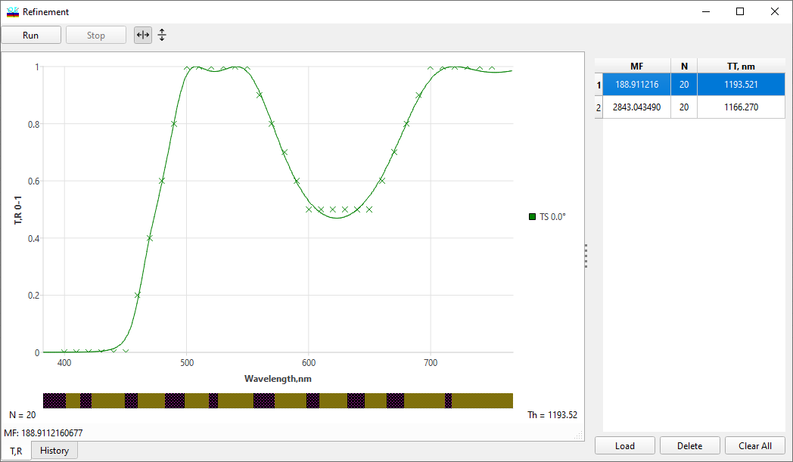

Refinement Window
Refinement Window
Navigation: OptiLayer Menu Commands > Synthesis Menu >
Refinement Window
` <idh_refinement.html>`__ ` <idh_menu_synthesis.html>`__ ` <inhomogeneities_interlayers_re.html>`__
This window graphically illustrates the process of matching the theoretical spectral characteristic to the loaded target function. Powerful optimization methods used by OptiLayer enable rapid convergence of the optimization procedure.

You can select characteristics to be displayed as well as switch between various optimization methods using the Options button which specifies Refinement Options.
You can also right-click to access the Popup Menu. It allows you to modify the Refinement Options as well as switch between the Spectral and Angular modes of a data presentation. Note that in the Angular mode characteristics are plotted as functions of the incidence angles, each curve corresponding to one wavelength.
of data presentation. Note that in the Angular mode, characteristics are plotted as functions of the incidence angles, with each curve corresponding to one wavelength. During the optimization process, you can increase the optimization speed by disabling graphic monitoring (check the Silent box). The Stop button allows you to abort the process. A progress bar shows the progress of calculations. These controls are only present during the optimization process. To evaluate the progress of the optimization process, mathematical characteristics are presented in the window. These include the current merit function value (MF), the iteration counter (IC), and the norm of the merit function gradient (GrNorm).
Notes:

Since version 6.67 of OptiLayer, the Silent option is enabled by default because the latest version provides informative output even in silent mode.

You can use the “Update Other Windows” command to update all other open windows to the current design. This command can be accessed from the right-click menu, using the F12 shortcut, or by clicking on a small specialized button in the bottom right corner of the Refinement Window (which appears only during computations).